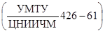
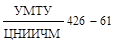
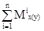
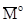
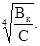
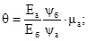
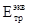
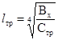

МИНИСТЕРСТВО ГРАЖДАНСКОЙ АВИАЦИИ СССР
Государственный
проектно-изыскательский и
научно-исследовательский институт ГА «Аэропроект»
|
«УТВЕРЖДАЮ» Заместитель Министра
А. ПОПОВ 12 апреля 1968 г. |
Представляю на утверждение Начальник ГПИ и НИИ ГА
И. ИВАНОВ 28 марта 1968 г. |
ТЕХНИЧЕСКИЕ УКАЗАНИЯ
ПО ПРОЕКТИРОВАНИЮ И СТРОИТЕЛЬСТВУ СБОРНЫХ
ПОКРЫТИЙ ИЗ ПРЕДНАПРЯЖЕННЫХ ЖЕЛЕЗОБЕТОННЫХ
ПЛИТ ДЛЯ АЭРОДРОМОВ КЛАССОВ Б и В ГА
Отдел научно-технической информации
Москва 1968
Технические указания разработаны Государственным проектно-изыскательским и научно-исследовательским институтом ГА «Аэропроект» и предназначены для руководства при проектировании предварительно напряженных железобетонных аэродромных плит и сборных покрытий из них под тяжелые нагрузки, включая II и III категории расчетных нагрузок.
Указания разработаны на основе результатов специально проведенных в 1963 - 1967 гг. исследовательских работ с учетом опыта проектирования, строительства и эксплуатации сборных аэродромных покрытий из типовых плит ПАГ-XIV.
Технические указания разработаны докт. техн. наук Б.С. Раевым-Богословским, канд. техн. наук Б.И. Деминым, инженерами К.Д. Жуковым, Б.И. Смолкой, Н.С. Исаевым, В.П. Апестиной.
|
Ведомственные технические указания |
ВСН-31-68 |
|
|
Технические указания по проектированию и строительству сборных покрытий из преднапряженных плит для аэродромов классов Б и В ГА |
печатается впервые |
1. Настоящие технические указания распространяются на проектирование и строительство сборных покрытий в Аэропортах Министерства гражданской авиации СССР.
2. Технические указания также могут быть распространены на организации Министерства авиационной промышленности СССР, Министерства обороны СССР и других ведомств, осуществляющих проектирование и строительство сборных покрытий.
3. Целью создания предварительного напряжения в бетоне плит сборных покрытий является:
- повышение трещиностойкости покрытий при воздействии эксплуатационных нагрузок;
- повышение устойчивости покрытия при воздействии подвижных нагрузок и уменьшение неравномерности деформаций различных участков плит (центр, край, угол).
4. Предварительное напряжение в плитах сборных покрытий может создаваться как в процессе заводского изготовления плит, так и в процессе монтажа покрытия после укладки плит.
В Указаниях рассматриваются оба варианта.
|
Внесены Государственным проектно-изыскательским и научно-исследовательским институтом ГА «Аэропроект» |
Утверждены Министерством гражданской авиации |
Срок введения 1968 |
5. Обжатие аэродромных плит и сборных покрытий создается за счет предварительного напряжения арматуры, которая может применяться:
а) в виде отдельных проволок, проволочных прядей, пакетов и пучков;
б) в виде стержней горячекатанной арматуры из низколегированной стали.
6. Напряжение арматуры может осуществляться механическим, электротермическим и электротермомеханическим способами.
7. Для аэродромных плит сборных покрытий должен применяться бетон с проектной маркой по прочности на растяжение при изгибе не ниже 50 и на сжатие не ниже 400.
Допускается, как исключение, применение бетона с проектной маркой на сжатие 300 и растяжение при изгибе 45 для плит со стержневой напрягаемой арматурой периодического профиля.
Бетон плит должен удовлетворять требованиям действующего ГОСТа на бетон дорожный. Нормативные и расчетные характеристики бетона приведены в табл. 1.
8. Для аэродромных плит сборных покрытий может применяться:
а) в качестве напрягаемой арматуры при ее натяжении в процессе заводского изготовления плит:
- горячекатанная сталь периодического профиля класса А-IV (ГОСТ 5781-61);
- упрочненная вытяжкой сталь класса Ав-III;
- холоднотянутая высокопрочная проволока периодического профиля из стали класса Вр-II (ГОСТ 8480-57);
- пряди из высокопрочной проволоки 
Примечание: В качестве напрягаемой арматуры для аэродромных плит гладкую высокопрочную проволоку без специальной анкеровки применять запрещается.
б) в качестве ненапрягаемой арматуры:
- холоднотянутая проволока класса В-I (ГОСТ 6727-53);
- горячекатанная арматура периодического профиля класса А-II (ГОСТ 5781-61).
в) в качестве напрягаемой арматуры для создания последующего обжатия покрытия (при инъецировании каналов цементным раствором):
- прядевая арматура;
- пучковая арматура из гладкой высокопрочной проволоки класса В-II по ГОСТу 7348-55;
- стержневая арматура классов А-IV, Ав-III.
Без инъецирования каналов может применяться только стержневая арматура классов А-IV, Ав-III, диаметром не менее 18 мм.
Нормативные и расчетные характеристики арматуры приведены в табл. 2.
Таблица 1
Нормативные и расчетные характеристики бетона аэродромных плит сборных покрытий
|
Наименование характеристики |
Обозначения |
Значения характеристик бетона в кг/см2 при проектной марке бетона по прочности на растяжение при изгибе |
||
|
45 |
50 |
55 |
||
|
Нормативное сопротивление сжатию при изгибе |
Rни |
305 |
350 |
440 |
|
Нормативное сопротивление растяжению при изгибе |
Rнри |
45 |
80 |
55 |
|
Расчетное сопротивление сжатию при изгибе |
Rи |
195 |
210 |
250 |
|
Расчетное сопротивление растяжению при изгибе при расчете по образованию трещин |
Rти |
38 |
42 |
45 |
|
Модуль упругости |
Еδ |
330000 |
350000 |
380000 |
Таблица 2
Нормативные и расчетные характеристики арматуры применяемой для сборных аэродромных покрытий
|
Вид арматуры |
Нормативные сопротивления, кг/см2 |
Расчетные сопротивления, кг/см2 |
Модули упругости Еδ, кг/см2 |
|
Горячекатанная периодического профиля классов А-IV |
6000 |
5400 |
2000000 |
|
Горячекатанная периодического профиля классов А-II |
3000 |
2700 |
2100000 |
|
Горячекатанная периодического профиля упрочненная вытяжкой арматурная сталь класса Ав-III с контролем: |
|
|
|
|
а) напряжения и удлинения; |
5500 |
4500 |
2000000 |
|
б) только удлинения |
5500 |
4000 |
2000000 |
|
Проволока холоднотянутая низкоуглеродистая диаметром до 55 мм класса В-I (ГОСТ 6727-53) |
5500 |
3150 |
1800000 |
|
Семипроволочные арматурные пряди по  |
|
|
|
|
при диаметре проволоки 1,5 мм |
19000 |
12300 |
|
|
при диаметре проволоки 2,0 мм |
18000 |
11700 |
|
|
при диаметре проволоки 2,5 мм |
18000 |
11700 |
1800000 |
|
при диаметре проволоки 3,0 мм |
17000 |
11000 |
|
|
при диаметре проволоки 4 мм |
16000 |
10400 |
|
|
при диаметре проволоки 5 мм |
15000 |
9700 |
|
|
Проволока высокопрочная периодического профиля класс Вр-II (ГОСТ 8480-57) |
|
|
. |
|
диаметром 3 мм |
17000 |
11000 |
1800000 |
|
диаметром 4 мм |
16000 |
10400 |
|
|
диаметром 5 мм |
15000 |
9700 |
|
|
диаметром 6 мм |
14000 |
9100 |
|
|
диаметром 7 мм |
13000 |
8400 |
|
|
диаметром 8 мм |
12000 |
7800 |
|
|
Проволока высокопрочная гладкая класса В-II ГОСТ 7348-55 |
|
|
|
|
диаметром 4 мм |
18000 |
11700 |
|
|
диаметром 5 мм |
17000 |
11000 |
1800000 |
|
диаметром 6 мм |
18000 |
10400 |
|
9. Для сборных аэродромных покрытий, как правило, должны применяться типовые предварительно напряженные железобетонные плиты.
10. При необходимости разработки нетиповых конструкций плит для сборных покрытий должны выполняться требования, изложенные в пп. 11 - 24 настоящих Указаний.
11. Конструкция предварительно напряженной железобетонной плиты для сборного аэродромного покрытия проектируется с учетом технологических возможностей заводского изготовления, которые определяются, главным образом, грузоподъемностью кранового оборудования, габаритами пропарочных камер и транспортных средств, методом создания напряжения арматуры и применяемым для этой цели технологическим оборудованием.
12. Размеры плиты в плане должны назначаться максимально возможными, с учетом требований п. 11 и с учетом грузоподъемности и габаритов транспортных средств и кранов, используемых при монтаже покрытия, но не менее 2´5 м - для прямоугольной плиты и 3´3 м - для квадратной плиты.
13. Наиболее рациональной конструкцией является плита с напрягаемой арматурой в двух взаимно перпендикулярных направлениях.
При отсутствии технологических возможностей у завода-изготовителя для создания напряжения арматуры в двух направлениях допускается армировать плиту напрягаемой арматурой только в одном продольном направлении,
В этом случае форму плиты рекомендуется принимать прямоугольной с отношением сторон не менее 2, а краевые участки плит в поперечном направлении желательно армировать также напрягаемой арматурой.
14. Напрягаемая и ненапрягаемая арматура по сечению плиты должна располагаться в двух уровнях - в нижней и верхней зонах плиты. Схема армирования и площадь поперечного сечения арматуры определяются, исходя из величины действующих усилий.
Рис. 1. Минимальная величина напряжений, создаваемых последующим обжатием σ, в зависимости от напряжений сдвига τ
15. Минимальная величина предварительного напряжения в бетоне должна составлять в продольном направлении не менее 20 кг/см2, в поперечном - 10 кг/см2.
Величина напряжений в покрытии, создаваемых последующим обжатием, должна быть не менее 5,0 кг/см2 и определяться по графику (рис. 1) в зависимости от величины τ, определяемой по формуле:
где h -толщина плиты, см;
Q - перерезывающая сила от единичной нагрузки, определяемая по рис. 2;
к, к' - коэффициенты, определяемые по рис. 3.
16. Расстояние между стержнями напрягаемой арматуры из стали класса А-IV, Ав-III, должно быть не больше 650 мм, а расстояние от краев плиты до напрягаемых стержней рекомендуется принимать в пределах 70 ¸ 100 мм. Диаметр стержней должен быть не более 16 мм.
17. Не рекомендуется сечение плиты на каком-либо участке армировать одновременно напрягаемой и ненапрягаемой рабочей арматурой.
18. В плитах с одноосным (продольным) обжатием краевые участки плит в поперечном направлении шириной 50 ¸ 100 см должны армироваться либо напрягаемой арматурой, либо ненапрягаемой стержневой арматурой периодического профиля. Применение для армирования холоднотянутой проволоки или гладкой круглой стали на этих участках не допускается.
19. Для предохранения углов плит от скалывания бетона при распалубке и возможных ударах при погрузочно-разгрузочных работах и монтаже покрытия их рекомендуется армировать дополнительными угловыми стержнями.
20. В плитах, армированных напрягаемой стержневой арматурой, для предупреждения появления трещин в бетоне при передаче на него предварительного напряжения и дальнейшего развития их в процессе эксплуатации, по концам арматурных стержней следует предусматривать установку спиралей длиной 150 мм и диаметром 50 мм из холоднотянутой проволоки диаметром 3 мм.
21. Проектирование плит с проволочной и прядевой напрягаемой арматурой должно производиться с учетом обеспечения надежного сцепления арматуры с бетоном, или заанкеривания ее у торцов плиты с помощью специальных анкеров. Зона полной анкеровки арматуры не должна превышать 300 мм.
Для улучшения условий самоанкеровки арматуры необходимо применять:
- проволоку только периодического профиля и бетон с проектной маркой по прочности на сжатие не ниже «400»;
- напрягаемую проволочную и прядевую арматуру располагать в виде отдельных проводов и прядей или попарно с расстоянием между проволоками, прядями или парами в свету не менее 15 мм;
Рис. 2. График для определения Q
Рис. 3. График для определения коэффициента увеличения перерезывающей силы при двухколесной и четырехколесной опоре
- передачу предварительного напряжения на бетон производить при прочности его на сжатие не ниже 280 кг/см2, а также осуществлять мероприятия по устранению мгновенной передачи предварительного напряжения на бетон (например, предварительным прогревом выступающих из тела плиты концов арматурных проволок и прядей).
22. Толщина защитного слоя бетона должна быть не менее 30 мм для верхней и 20 мм для нижней рабочей арматуры.
В многопустотных плитах толщина верхней полки должна приниматься не менее 60 мм и нижней - не менее 40 мм, а толщина стенки - не менее 50 мм.
23. Диаметр канала для размещения напрягаемой стержневой арматуры должен приниматься с учетом габаритов стыкового соединения стержней и требуемого технологического зазора, равного не менее 20 мм.
24. В плитах сплошного сечения с каналами для последующего обжатия в местах примыкания последних к продольным торцам плит необходимо предусматривать пазы с целью установки в них тройников для инъецирования раствора или отрезков трубок для предотвращения вытекания инъецируемого раствора в швы между плитами.
25. Соединение арматурных стержней периодического профиля, применяемых для последующего обжатия, может выполняться:
- с помощью электросварки - для стержней из свариваемых марок стали, не подвергаемых термическому упрочнению;
- холодноопрессованными муфтами из стали марки Ст-3;
- резьбовыми муфтами из стали марки Ст-5.
Рекомендуемые параметры муфт для стержней диаметром 18 мм из стали класса А-IV:
а) для холодноопрессованного соединения: длина - 50 мм, внутренний диаметр - 20 мм, внешний диаметр - 40 мм;
б) для резьбового соединения: длина - 60 мм, наружный диаметр - 30 мм, резьба - М 18´1,5.
Закрепление напрягаемой арматуры при последующем обжатии рекомендуется выполнять с помощью анкерных гаек с поданкерными шайбами. Для этого на концы стержневой арматуры наносится нарезка, а концы прядевой и пучковой арматуры из высокопрочной проволоки оснащаются гильзовыми анкерами, состоящими из стержня и гильзы. Для закрепления пучковой арматуры допускается применение стальных цилиндрических колодок и конусных пробок, запрессовываемых в колодки домкратами двойного действия.
Боковая поверхность пробок снабжается нарезкой треугольного или трапециевидного профиля.
27. Детали анкерных устройств должны изготавливаться:
- стержни гильзовых анкеров - из углеродистой горячекатанной стали (ГОСТ 1050-57) или из стали ГОСТ 4543-57;
- гильзы - из стали марки Ст-3 по ГОСТ 380-57;
- анкерные колодки - из качественной конструкционной углеродистой стали марки Ст-45 (ГОСТ 1050-57);
- конические пробки - из стали марки Ст-45 (ГОСТ 1050-57) или из легированной стали марки Ст-40 (ГОСТ 4543-57) с последующей закалкой до твердости НRC = 52 - 55 единиц (по Роквеллу);
- поданкерные шайбы - из стали марки Ст-3;
- анкерные гайки из стали марки Ст-5.
28. Размеры анкерных гаек принимаются по ГОСТу 5930-51 «Гайки чистые шестигранные высокие» (Н = 1,2).
Размеры поданкерных шайб определяются расчетом.
Рекомендуемые размеры анкерных гаек и поданкерных шайб для анкеровки стержней диаметром 18 мм из стали класса А-IV при обжатии покрытия из типовых плит показаны на рис. 4, 5.
Размеры гильзовых анкеров, анкерных колодок и пробок принимаются в зависимости от количества проволок в пучке и диаметра проволок.
29. В покрытиях с последующим обжатием должны предусматриваться мероприятия по защите арматуры от коррозии.
Защита от коррозии стержневой арматуры может осуществляться путем обмазки в два слоя горячим битумом марки БН-IV или резинобитумным вяжущим, а в плитах сплошного сечения с каналами диаметром 50 - 60 мм целесообразно производить инъецирование цементного раствора.
Защита от коррозии пучковой и прядевой арматуры должна производиться только путем инъецирования в каналы цементного раствора.
Рис. 4. Поданкерная шайба для плит ПАГ-XIV (материал Ст-3)
Рис. 5. Анкерная гайка (материал Ст-5)
30. В многопустотных плитах должна предусматриваться заделка отверстий на их гранях с помощью бетонных пробок-заглушек для больших отверстий (160 мм) и наклейкой гидроизоляционного изола толщиной 2 - 5 мм или рубероида для малых отверстий (50 - 60 мм).
31. Для обеспечения устойчивого положения плит в покрытии при воздействии на них подвижной нагрузки должны быть предусмотрены стыковые соединения. Рекомендуется стыковое соединение в виде горизонтально расположенных скоб (рис. 6), которые закладываются в плиты при изготовлении последних и свариваются между собой в процессе монтажа покрытия. Скобы выполняются из круглой стали класса А-I диаметром не менее 20 мм.
При применении последующего обжатия покрытия стыковые соединения между плитами могут не устраиваться.
Рис. 6. Конструкция стыкового соединения с совмещенной (стыковой и монтажной) скобой
32. Для подъема плит должны предусматриваться монтажные закладные элементы. С этой целью взамен специально устраиваемых монтажных петель могут быть использованы стыковые скобы (рис. 6).
33. В рабочих чертежах плит, пояснениях к ним и в технических условиях на плиты должны быть указаны:
а) характеристики применяемых сталей (класс, профиль, диаметр, номер ГОСТ или ТУ);
б) схема заводских испытаний плит и величина контрольной нагрузки;
в) проектные марки бетона по прочности на растяжение при изгибе и на сжатие, прочность бетона на сжатие при передаче на него предварительного напряжения и отпускная прочность бетона;
г) величина контролируемого напряжения арматуры и допускаемые отклонения;
д) требования к готовым плитам.
34. Готовые плиты должны удовлетворять следующим требованиям:
а) по внешнему виду плит:
- не допускаются никакие трещины на поверхности и боковых гранях плит, поверхность их должна быть выровнена и для предотвращения скользкости обработана капроновой щеткой или брезентовой лентой;
- величина искривлений всех плоскостей допускается не более 5 мм на всю длину или ширину плиты;
- на верхней и нижней плоскостях, а также боковых гранях плит допускаются местные неровности высотой не более 5 мм;
- концы напрягаемой арматуры не должны выступать из тела плиты более чем на 3 мм.
б) отклонения плит от проектных размеров не должны превышать по длине +8 -4 мм, по ширине ± 5 мм, по высоте ± 5 мм, по толщине защитного слоя + 5 мм;
- по расположению стыковых скоб по высоте плиты ± 3 мм, в плане ± 5 мм, а по выступу за грань плиты ± 2 мм;
- по расположению каналов для пропуска арматуры последующего обжатия покрытия в плане ± 5 мм, по высоте плиты ± 3 мм.
Примечание: на чертежах следует указывать расстояние от середины плиты до центра отверстия каждого канала.
35. Сборные покрытия должны устраиваться, как правило, на искусственных основаниях. Без таких оснований сборные покрытия могут устраиваться только как исключение при благоприятных гидрогеологических и климатических условиях (наличие песчаных подстилающих грунтов, малая глубина промерзания, низкий уровень грунтовых вод).
36. В качестве искусственных оснований под сборные покрытия могут применяться песок, песчано-гравийные смеси, шлак, пескоцемент, грунтоцемент, а также щебень, грунтощебень и грунтогравий с обработкой и без обработки вяжущими материалами.
37. Конструкции искусственных оснований должны приниматься дифференцированно для каждого аэродрома и для отдельных участков покрытия на аэродроме (ВПП, МС, РД) с учетом природных условий районов строительства, величины и характера действующих на покрытие нагрузок, условий эксплуатации и наличия местных строительных материалов.
При этом, как правило, плиты, укладываемые на различных участках одного аэродрома, должны иметь одинаковую толщину. Прочность покрытия, разная по характеру силовых воздействий, должна обеспечиваться устройством искусственных оснований конструкций различных типов или толщины.
38. Для обеспечения хорошего контактирования плит с основанием предусматривается устройство выравнивающего слоя из песка или пескоцементной смеси. Песчаный выравнивающий слой устраивается при укладке плит непосредственно на грунтовое основание, а пескоцементный - при укладке плит на все типы искусственных оснований, указанные в п. 37 (кроме песчаного).
Толщина песчаного выравнивающего слоя принимается равной 6 ¸ 10 см, а пескоцементного 2 ¸ 6 см. Расход цемента марки 400 для пескоцементной смеси должен быть не менее 250 кг/м3 песка.
39. С целью создания более благоприятных условий для движения самолета по покрытию, плиты должны укладываться длинной стороной вдоль основного направления движения самолетов.
40. Для обеспечения устойчивости покрытия плиты в необжатых швах должны соединяться между собой. При применении сварных стыковых соединений через каждые 18 ¸ 24 м в обоих направлениях должны предусматриваться температурные швы.
41. Швы между плитами в сборных покрытиях заполняются мастиками стандартного состава.
В целях экономии мастик допускается нижнюю часть швов на высоте около 2/3 толщины плиты заполнять пескоцементной смесью, а верхнюю - мастикой.
Обжимаемые швы сборных покрытий заполняются цементным раствором марки не ниже 150 на высоту около 2/3 толщины плиты. Верхняя часть шва заполняется мастикой.
42. Проектирование дренажно-водосточной системы производится в зависимости от климатических и гидрогеологических условий, а также от рельефа местности.
При благоприятных климатических условиях и наличии песчаных и супесчаных грунтов отвод поверхностных вод с покрытия может быть решен сбрасыванием их на прилегающие грунтовые участки с устройством (при необходимости) грунтовых лотков с тальвежными колодцами.
При неблагоприятных климатических и гидрогеологических условиях в случае необходимости устройства на покрытии открытых лотков последние могут выполняться из асфальтобетона, специальных железобетонных плит или монолитного бетона.
43. Расчет предварительно напряженных сборных аэродромных покрытий производится по предельным состояниям на статическую нагрузку. Динамичность и возможные перегрузки учитываются коэффициентами динамичности Кдн и перегрузки Пр, значения которых принимаются по табл. 3.
Таблица 3
Значения расчетных коэффициентов
|
Участки покрытий |
Коэффициент перегрузки Пр |
Коэффициент динамичности, Кдн |
||
|
Давление в пневматиках, кг/см2 |
||||
|
до 10 |
10 - 15 |
более 15 |
||
|
Магистральные РД, концевые участки ВПП длиной по 150 м и предстартовые площадки |
1,0 |
1,2 |
1,25 |
1,30 |
|
Участки ВПП длиной LВПП/4 - 150 м, примыкающие к концевым, вспомогательные РД, МС, перроны и другие аналогичные площадки временной стоянки самолетов |
1,0 |
1,1 |
1,15 |
1,20 |
|
Средняя часть ВПП |
0,85 |
1,1 |
1,1 |
1,1 |
44. Предельными состояниями плит сборных покрытий являются:
а) для предварительно напряженных сечений - предельное состояние по образованию трещин;
б) для сечений, армированных ненапрягаемой арматурой - предельное состояние по несущей способности - прочности и предельное состояние по раскрытию трещин.
45. Основной расчет плит сборных покрытий производится при положении нагрузки в ее центре. Усилия в плитах и их прогиб при центральном загружении вычисляются по формулам расчета плит, имеющих неограниченные размеры в плане.
Максимальные значения изгибающих моментов, реактивных давлений и прогибов в плитах покрытий при центральном загружении определяются как сумма изгибающих моментов, реактивных давлений или прогибов, создаваемых всеми колесами самолетной опоры в наиболее нагруженном сечении плиты. Таким сечением может быть сечение, расположенное под центром наиболее загруженного колеса или сечение, расположенное под центром опоры.
46. Общие формулы для определения усилий, прогибов и давлений при центральном загружении плит имеют вид:
Мх(у) = Кх(у)(М°х(у) + 
где Мх(у), W, Р - максимальные значения изгибающих моментов, прогибов и реактивных давлений при центральном загружении;
М°х(у) - изгибающий момент от воздействия колеса, центр отпечатка которого совпадает с расчетным сечением;
Мiх(у), Wi - изгибающие моменты и прогибы, создаваемые действием i-го колеса, расположенного за пределами расчетного сечения;
С - коэффициент постели;
Кх(у), Кw - коэффициенты, учитывающие перераспределение внутренних усилий в плитах, определяемые по графикам (рис. 7, 8) в зависимости от соотношения By / Bx.
Вх и Ву - жесткости сечений плиты нормальных направлениям X и У, определяемые по указаниям п. 49.
Рис. 7. Значения коэффициентов Кx и Кy в зависимости от соотношения жесткостей
Рис. 8. Значения коэффициента Кw в зависимости от соотношения жесткостей
47. Изгибающий момент в центре отпечатка пневматика наиболее нагруженного колеса от действия этого же колеса определяется по формуле:
где Р - расчетная нагрузка на колесо;
Ро - нагрузка на опору;
Nк - количество колес на опоре самолета;

l - упругая характеристика плиты, равная 
Расчетные изгибающие моменты на краю, углу и других точках плит покрытия определяются по формуле:
Значения коэффициента К принимаются по рис. 10.
48. Жесткость предварительно напряженных сечений плит принимается равной цилиндрической:
где b - расчетная ширина сечения;
h - толщина плиты;
μб - коэффициент Пуассона материала плиты.
Рис. 9. Значения изгибающего момента в зависимости от приведенного радиуса λ = R / l
Жесткость сечений, армированных ненапрягаемой арматурой определяется по формуле:
где Fa - площадь сечения арматуры растянутой зоны плиты;
h0 - рабочая высота сечения;
X - высота сжатой зоны сечения, вычисляемая по формуле:
где 
коэффициент армирования - μ = Fa / (bh0),
ψб - коэффициент, учитывающий неравномерность распределения деформаций крайнего волокна сжатой грани сечения на участке между трещинами, принимаемый по табл. 4.
Таблица 4
|
lе - расстояние между арматурными стержнями h - толщина плиты |
0,5 |
0,75 |
1,0 |
1,25 |
1,5 и более |
|
ψб |
0,79 |
0,67 |
0,59 |
0,53 |
0,48 |
ψa - коэффициент, учитывающий работу растянутого бетона между трещинами, определяемый по формуле:
S - коэффициент, характеризующий профиль арматурных стержней, принимаемый равным: 1,1 - для стержней периодического профиля; 1,0 - для гладких стержней;
z1 - расстояние от центра тяжести сечения арматуры растянутой зоны до точки приложения равнодействующей усилий в сжатой зоне сечения (над трещиной), определяемое по формуле:
ε - относительная высота сжатой зоны бетона в сечении с трещиной, определяемая по формуле:
m - коэффициент условий работы конструкции, принимаемый по табл. 5.
Рис. 10. Значения переходных коэффициентов К для плит сборных покрытий
а - для положительных моментов; б - для отрицательных
Значение коэффициента ψa при расчете покрытия на прочность принимается не менее 0,2 и не более 0,55.
При расчете по раскрытию трещин сечений, армированных ненапрягаемой арматурой, значение коэффициента принимается равным 1.
Таблица 5
Значения коэффициента условий работы
|
Участки покрытий |
Значение коэффициента m при расчете сечений |
|||
|
по образованию трещин |
по прочности и раскрытию трещин |
|||
|
количество взлетов и посадок тыс. в год |
||||
|
до 30 |
30 ¸ 100 |
более 100 |
||
|
Магистральные РД, предстартовые площадки, концевые участки ВПП длиной по 150 м |
1,1 |
1,0 |
0,9 |
1,2 |
|
Вспомогательные РД, концевые участки ВПП длиной LВПП/4 - 150 м, МС, перроны и другие площадки |
1,2 |
1,1 |
1,0 |
1,3 |
|
Средняя часть ВПП шириной 0,5ВВПП |
1,0 |
1,1 |
1,0 |
1,3 |
|
Крайние ряды ВПП, в том числе и концевых участков |
1,4 |
1,3 |
1,2 |
1,4 |
При расчете по образованию трещин сечений, армированных проволочной напрягаемой арматурой, коэффициент условий работы уменьшается на 15 %.
При расчете сборных покрытий с последующим поперечным обжатием коэффициент условий работы увеличивается на 10 %.
49. При расчете по образованию трещин предварительно напряженных сечений должно соблюдаться неравенство:
Мр ≤ Мт = m(γ'Rти · W0 + Мяоб), (14)
где Rти - расчетное сопротивление бетона растяжению при изгибе определяется по табл. 1;
W0 - упругий момент сопротивления сечения;
γ' - коэффициент, учитывающий зависимость упругопластического момента сопротивления от формы сечения, принимается равным: 1,0 - для плит сплошного сечения; 0,8 - для многопустотных плит;
m - коэффициент условий работы, принимаемый по табл. 5, в зависимости от интенсивности эксплуатации аэродрома.
Мяоб - момент равнодействующей усилий N0 в нижней и верхней напрягаемой арматуре относительно оси, нормальной к плоскости изгиба и проходящей через ядровую точку, наиболее удаленную от зоны сечения, трещинообразование которой проверяется.
Значение Мяоб определяется по формуле:
Мяоб = (Fнσн + Fн'σн')(zя ± е0)mт, (15)
где Fн, Fн' - площадь сечения соответственно нижней и верхней напрягаемой арматуры;
σн, σн' - напряжение соответственно в нижней и верхней арматуре с учетом потерь;
zя - расстояние от ядровой точки до центра тяжести сечения;
е0 - эксцентриситет приложения равнодействующей усилий в напрягаемой арматуре относительно центра тяжести сечения;
mт - коэффициент точности напряжения арматуры.
50. Значения потерь предварительного напряжения арматуры принимаются по таблице 14 СНиП II-В1-62.
51. Величина контролируемого предварительного напряжения арматуры принимается равной:
- для арматурной стали классов Ав-III, А-IV
σн = σн' = 0,9Rна,
- для арматуры из высокопрочной проволоки
σн = σн' = 0,65Rна,
Rа, Rна - нормативное сопротивление арматуры, принимаемое по табл. 2.
52. Коэффициент точности предварительного напряжения арматуры при механическом, электротермическом способах натяжения принимается равным 0,9.
При электротермическом способе натяжения арматуры коэффициент точности определяется по формуле:
но не более 0,9,
где ΔР - верхнее и нижнее предельное отклонение заданного напряжения арматуры;
nc - количество стержней напряженной арматуры.
53. Предельное неравенство при расчете прочности сечений, армированных ненапрягаемой арматурой, имеет вид:
54. Ширина раскрытия трещин в сечениях армированных ненапрягаемой арматурой, определяется по формуле:
где σa - напряжение в арматуре, определяемое по формуле:
Значение Мр в формуле (19) определяется с учетом коэффициента Ку, который принимается по рис. 7 при жесткости Ву, вычисленной по формуле при ψа = 1,0.
lт - расстояние между трещинами:
где И = Fa / Sa,
Sa - периметр сечения арматуры;
к'1 - коэффициент определяемый по формуле:
η1 - коэффициент, принимаемый равным:
- для арматуры периодического профиля η1 = 0,7;
- для гладких стержней η1 = 1,0;
- для сварных сеток из холоднотянутой проволоки η1 = 1,25.
55. Ширина раскрытия трещин не должна превышать 0,3 мм.
Особенности расчета толщины упрочненных искусственных оснований под плиты сборных покрытий
56. Расчет требуемой толщины искусственного основания, при заданной конструкции плиты сборного покрытия, производится в следующей последовательности:
а) требуемое увеличение коэффициента постели основания (Cтр / Со) определяется по графику*) (рис. 11) в зависимости от отношения Мр / Мт и относительного радиуса отпечатка пневматика λ;
*) По графику (рис. 11) определяется Cтр / Со при расчете покрытий на одноколесную опору. При расчете покрытий на опоры с другим числом колес, требуемое увеличение коэффициента постели устанавливается методом последовательного приближения.
Рис. 11. Номограмма для определения Cтр (цифры на кривых указывают величины приведенного радиуса λ = R / l)
Мр - момент в плите на грунтовом основании от нагрузки при наиболее невыгодном ее загружении.
Мт - вычисляется по формуле (14).
Требуемый коэффициент постели определяется по формуле:
Со - расчетный коэффициент постели грунтового основания;
б) вычисляется требуемый эквивалентный модуль деформации основания 
в) определяется условный диаметр круга передачи нагрузки от покрытия на основание
где 
Кw - определяется по рис. 8;
г) вычисляется модуль деформации грунта по формуле:
д) назначается материал искусственного основания и по табл. 8 - 11 определяется значение его модуля деформации Е1;
Рис. 12. Диаграмма для определения d / h в зависимости от отношений Еосн / Е0 и Еэкв / Е0 (цифры на кривых указывают Еэкв / Е0)
е) по диаграммам (рис. 12, 13) предварительно устанавливается требуемая относительная толщина искусственного основания d / h и определяется коэффициент повышения модуля деформации грунта за счет увеличения площади передачи на него нагрузки при устройстве искусственного основания - Кгр.
Если по диаграмме Кгр оказывается больше 3, его значение принимается равным 3;
ж) по диаграмме (рис. 12) вновь определяется относительная толщина d / h при значении модуля деформации грунта равном:
Рис. 13. Диаграмма для определения коэффициента Кгр при расчете требуемой толщины основания под жесткие покрытия (цифры на кривых указывают d / h)
57. Указанные в пп. е, ж операции продолжаются до тех пор, пока не будет получено совпадение окончательных d / h и Кгр с принятыми при последнем уточнении с точностью ± 5 %;
з) определяется требуемая толщина искусственного основания
Примечание: При выборе материала искусственного основания следует обращать внимание на то, чтобы отношение его модуля деформации к модулю деформации грунта Е1 / Е0 не превышало 80.
58. В тех случаях, когда для получения требуемого необходимо Е1 / Е0 > 80, следует устраивать многослойные искусственные основания.
Расчет в этом случае также ведется по указанной выше методике с приведением многослойной конструкции к однослойной эквивалентной толщине.
Для этого один из слоев многослойной конструкции основания принимается за основной, а остальные приводятся к основному.
Эквивалентная толщина слоя определяется по формуле:
Таблица 8
Расчетные значения модулей деформации грунтоцемента в кг/см2 при применении его в качестве основания под жесткие покрытия (при укреплении грунтов цементом марки 400)
|
Модуль деформации грунтоцемента Е1 (кг/см2) в зависимости от ориентировочных добавок цемента (в % от веса грунтов) |
||||||
|
6 |
8 |
10 |
12 |
15 |
20 |
|
|
Оптимальные по гранулометрическому составу |
7000 |
12000 |
20000 |
30000 |
50000 |
90000 |
|
Мелкосупесчаные и тяжелосуглинистые и черноземные |
3000 |
6000 |
12000 |
20000 |
30000 |
60000 |
|
Пылеватые и пылеватосуглинистые подзолистого типа |
1500 |
3000 |
6000 |
10000 |
20000 |
45000 |
Модули деформации грунтоцемента, приведенные в таблице, соответствуют качественному выполнению работ, особенно по измельчению грунта и перемешиванию его с цементом, с применением грунтосмесительных машин.
При укреплении грунта цементом марки 300 расчетные значения модуля деформации должны быть уменьшены на 25 %.
Таблица 9
Расчетные значения модулей деформации пескоцемента и песчаногравийной смеси, стабилизированной цементом, при применении их в качестве основания под жесткие покрытия
|
Расход цемента марки 400, кг на 1 м3 песка или песчано-гравийной смеси |
200 |
250 |
|
Модуль деформации Е1, кг/см2 |
4500 30000 |
70000 50000 |
Примечания: 1. В числителе приведены значения Е1 при смешении песка с цементом в установке, а в знаменателе - на месте.
2. При перемешивании цемента марки 300 расчетные значения модуля деформации понижаются на 25 %.
3. Перемешивание песка с цементом и уплотнение пескоцементного основания должно производиться при оптимальной влажности песка.
Таблица 10
Расчетные значения модулей деформации грунтогравийных и грунтощебеночных оснований под жесткие покрытия (подобранных по гранулометрическому составу)
|
Вид смеси |
Модули деформации в зависимости от климатических зон, кг/см2 |
||
|
V - IV |
III |
II |
|
|
Крупнозернистые |
3000 - 3800 7500 - 8000 |
2800 - 3000 7500 - 8000 |
2800 - 3000 7500 - 8000 |
|
Среднезернистые |
2800 - 3000 6500 - 7500 |
2500 - 2800 6500 - 7500 |
2100 - 2500 6500 - 7500 |
|
Мелкозернистые |
2100 - 2500 5500 - 6000 |
1800 - 2100 5000 - 5500 |
1500 - 1800 4500 - 5000 |
Примечание: 1. В числителе приведены значения Е1 для необработанного материала, а в знаменателе - для материалов, обработанных битумом.
2. Меньшие значения Е1 относятся к гравийному материалу, большие к грунтощебеночному.
Таблица 11
Расчетные значения модулей деформации щебеночного основания под жесткие покрытия
|
Модуль деформации в зависимости от климатических зон |
|||
|
IV |
III |
II |
|
|
Основания, устроенные по принципу расклинцовки из каменных пород 1-й и 2-й марок |
5000 |
5000 |
5000 |
|
3-й марки |
3800 6000 |
3500 6000 |
3500 6000 |
|
4-й марки |
3500 6000 |
3000 5500 |
2800 5000 |
|
Основания, устроенные способом пропитки вязким битумом |
10000 |
10000 |
10000 |
Примечание: В знаменателе указаны значения Е1 для щебня, обработанного битумом, в числителе - без обработки.
59. Доставка плит с заводов-изготовителей на объекты осуществляется железнодорожным или автомобильным транспортом. При транспортировке в горизонтальном положении плиты должны укладываться в штабеля согласно п. 61. Однако, в каждом штабеле, как правило, должно быть не более 7 плит при перевозке железнодорожным и 3 - при перевозке автомобильным транспортом.
60. Для приемки и хранения плит на объектах организуются места складирования. Они устраиваются на спланированных площадках с уплотненным грунтом или на имеющихся площадках с искусственными покрытиями.
61. На складах плиты размещаются в штабелях по высоте не более 10 плит в каждом. Нижняя плита штабеля кладется на две деревянные подкладки толщиной не менее 15 см, если основание грунтовое, и не менее 10 см, если оно бетонное или с другим прочным покрытием. Обе подкладки располагаются строго перпендикулярно длинной стороне плиты на расстоянии 1,0 м от ее торцов. Последующие плиты в штабеле разделяются между собой деревянными прокладками толщиной 2,5 - 4 см, расположенными по вертикали строго над подкладками нижней плиты. Категорически запрещается укладывать плиты на неспланированные и неуплотненные грунтовые площадки, а также укладывать между плитами по три и более прокладок. Расстояние между штабелями должно быть не менее 0,8 м.
62. Транспортировка плит с прирельсового склада на приобъектный склад или к месту укладки в покрытие производится автотранспортными, средствами соответствующей грузоподъемности и габаритов. Для этих целей могут быть использованы автомобили бортовые и с полуприцепами типов МАЗ-200, ЯрАЗ-219, ЗИЛ-164Н, МАЗ-200В, МАЗ- 501В, а также автотягачи с трайлерами и т.п.
63. Погрузочно-разгрузочные работы с типовыми плитами рекомендуется производить с помощью самоходных или автомобильных кранов грузоподъемностью 10 - 16 т (типа К-104, К-123, К-124, К-161).
В целях предохранения граней плит от повреждения следует применять траверсы, обеспечивающие вертикальное положение тросов с крюками при подъеме и опускании плит.
В звено, обслуживающее один кран, входит 5 человек (машинист крана и 4 такелажника). Примерная производительность эвена при проведении погрузочно-разгрузочных работ приведена в таблице 12.
Таблица 12
Производительность звена при проведении погрузочно-разгрузочных работ
|
Тип используемого крана |
Производительность в смену, шт. |
|
|
Разгрузка плит из железнодорожных полувагонов |
К-123, К-124 |
120 |
|
Погрузка плит в автотранспортные средства |
-"- |
130 |
64. На прирельсовом или приобъектном складах производится осмотр поступающих плит и проверка соответствия их качества техническим условиям, изложенным в п. 34.
Все поступающие плиты, не отвечающие требованиям технических условий, складируются отдельно. В актах приемки по каждой из этих плит отмечаются все отклонения от технических условий.
65. На приобъектном или прирельсовом складе производится грунтовка граней плит. Для грунтовки используется 50-процентный раствор битума БН-III + БН-V или мастики И-2 в бензине, который тонким слоем наносится на поверхность боковых граней плит.
Перед нанесением раствора поверхность плит должна быть тщательно очищена от грязи и пыли с помощью сжатого воздуха от компрессора.
Для нанесения раствора битума в бензине на поверхность бетона используется пистолет-распылитель типа 0-19 со щелевым насадком для масляных красок и с бачком марки 0-25 или окрасочный агрегат типа 0-80. Воздух для работы пистолета-распылителя может подаваться от любого компрессора.
В звено, обслуживающее один пистолет-распылитель или окрасочный агрегат, входит 3 человека (машинист компрессора и два изолировщика).
Производительность звена при грунтовке граней плит составляет до 500 м2 грунтуемой поверхности в смену. Расход раствора - 200 г на 1 м2.
В случае заполнения нижней части швов на 2/3 их глубины пескоцементной смесью грунтовка граней производится только на 1/3 высоты плиты, считая от ее поверхности.
66. На приобъектном или прирельсовом складах производится наклейка рулонного гидроизоляционного изола на боковые грани плит, когда это предусмотрено проектом.
Поверхность граней плит перед наклейкой изола очищается от пыли с помощью металлических щеток и сжатого воздуха, а затем прогрунтовывается 70 % раствором РБВ, мастики «изол» или битума в бензине.
Поверхность изола перед наклейкой очищается от мелкой посыпки и пыли. Для приклеивания рулонного изола к прогрунтованным граням плит применяются холодные мастика «изол» или РБВ.
Разогрев РБВ производится в течение не более 4 часов до температуры 180 - 200 °С, а применение его в дело - в течение не более одного часа. Температура РБВ при нанесении его на грань плиты должна быть не выше 150 °С, а приклеивание прокладок изола должно производиться сразу после нанесения РБВ.
В случае применения холодной мастики «изол» для приклеивания рулонного изола наклеивание последнего производится через 30 ¸ 40 мин. после нанесения мастики.
Прокладка изола наклеивается на 2 см ниже поверхности плиты вручную с приглаживанием ее валиком. После наклейки прокладку прижимают с помощью зажимов к плите и выдерживают в прижатом состоянии в течение 8 ¸ 10 часов.
67. Технологическая схема монтажа сборных покрытий, после предварительной подготовки корыта или жесткого искусственного основания, включает следующие производственные процессы:
- устройство песчаного основания или выравнивающего песчаного и песчаноцементного слоев;
- укладка плит в покрытие;
- вибропосадка плит и, при необходимости, выравнивание поверхности покрытия;
- сварка стыковых скоб;
- заделка швов.
В покрытиях с последующим обжатием дополняются еще две операции:
- обжатие покрытия;
- защита арматуры от коррозии.
Основание под покрытие устраивается в соответствии с техническими условиями производства и приемки аэродромно-строительных работ СН 121-60.
68. Монтаж сборных покрытий производится рядами, состоящими по ширине из двух или трех плит. Все покрытие по длине делится на захватки. Длина захватки назначается, исходя из сменного темпа укладки и количества одновременно укладываемых рядов плит, и рекомендуется в пределах 200 ¸ 500 м.
Монтаж покрытия начинается от его продольной оси. В начале укладывается маячная полоса шириной в 2 - 3 ряда плит, одна из продольных кромок которой совпадает с продольной осью покрытия. Последующие ряды плит укладываются рядом с уложенными.
69. Работы по устройству сборных покрытий, как правило, должны производиться поточным методом с минимальным разрывом во времени между укладкой плит в покрытие и завершающей операцией - заделкой швов.
70. Устройство песчаного основания под сборные покрытия производится теми же способами и механизмами, которые применяются для устройства оснований под монолитные покрытия. В данном случае следует более серьезное внимание уделить тщательности уплотнения и планировки основания - отделки его поверхности.
Отделка поверхности песчаного основания или выравнивающего слоя производится с помощью профилировщика Д-345 в следующей последовательности:
- увлажнение песка водополивщиком до оптимальной влажности;
- срезка излишнего песка и его уплотнение профилировщиком-уплотнителем Д-345. При выполнении этой операции профилирующий отвал профилировщика устанавливается выше проектных отметок основания на величину ожидаемой осадки после уплотнения.
71. При устройстве выравнивающего слоя из песчано-цементной смеси смешение песка с цементом можно производить двумя способами: в установках (бетономешалках или растворомешалках) и на месте с помощью дорожной фрезы Д-530, навесного смесителя или автогрейдера.
В случае приготовления смеси в установках устройство пескоцементного выравнивающего слоя осуществляется аналогично устройству песчаного выравнивающего слоя.
Работы по устройству пескоцементного выравнивающего слоя должна производиться непосредственно перед укладкой плит в покрытие с разрывом во времени не более 4-х часов.
72. Песок, используемый для устройства выравнивающего слоя, должен удовлетворять требованиям, предъявляемым к песку, применяемому для устройства песчаных оснований. При устройстве песчаного либо пескоцементного выравнивающего слоя влажность песка должна быть оптимальной.
73. Комплект средств механизации и состав бригады, а также их производительность при устройстве песчаного основания или выравнивающего слоя приведены в табл. 13.
Таблица 13
Комплект средств механизации и состав бригады для устройства песчаного основания или выравнивающего слоя с применением профилировщика Д-345. Производительность бригады - до 3000 м2 в смену
|
Наименование |
Количество |
|
Средства механизации |
|
|
Профилировщик Д-345 с комплектом рельс-форм 400 п.м. (две нити) |
1 |
|
Водополивщик КПМ-1 или КПМ-2 |
1 |
|
Укладчик рельс-форм или автокран К-32 |
1 |
|
Автогрейдер Д-144 (446) |
1 |
|
Автомобиль ЗИЛ-150 или МАЗ-200 |
1 |
|
Электростанция ПЭС-12 |
1 |
|
Вибратор С-414 |
1 |
|
Трансформатор 230/366 - 1,5 кВ |
1 |
|
Состав бригады |
|
|
Машинисты и водители |
6 |
|
Дорожные рабочие |
4 |
|
Геодезисты |
2 |
Примечания: 1. При устройстве выравнивающего песчаного или пескоцементного слоя, а также при устройстве песчаного основания в случае наличия укладчика рельс-форм из комплекта исключается: электростанция ПЭС-15, вибратор С-414, трансформатор; количество машинистов и водителей уменьшается на 1 чел. и дорожных рабочих на 1 человека.
2. При устройстве пескоцементного выравнивающего слоя в комплект дополнительно включаются:
а) в случае приготовления смеси на месте: распределитель цемента Д-343А - 1 шт. или автосамосвал ЗИЛ-585 - 1 шт. и дорожная фреза Д-530 - 1 шт.; количество машинистов и водителей увеличивается на 2 человека;
б) в случае приготовления смеси в установке: бетономешалка С-336А - 1 шт.; количество машинистов и водителей увеличивается на 1 чел.
3. Количество автотранспортных средств, используемых для доставки материалов, определяется в зависимости от темпа укладки покрытия, дальности возки и состояния дорог.
74. Укладка плит в покрытие производится теми же кранами, что и погрузочно-разгрузочные работы (см. п. 63). Краны, как правило, работают с уже уложенного покрытия, укладывая плиты «от себя». В покрытие укладываются плиты с прогрунтованными гранями.
Подъем плит осуществляется траверсами, снабженными тросами или цепями с легкосменными стальными крюками, при обязательном захвате одновременно за все четыре монтажных скобы плиты.
Подъем плит, имеющих совмещенные стыковые и монтажные скобы, без траверс не допускается. Укладку плит производит звено в составе 5 человек (один машинист и 4 такелажника). Производительность звена в смену при укладке плит размерами 2´6 м самоходными пневмоколесными кранами типа К-161, К-124 составляет 1000 - 1200 м2 покрытия.
75. Покрытие считается смонтированным правильно, если уступы в швах смежных плит не превышают 5 мм, ширина швов находится в пределах 12 - 20 мм (при проектной ширине швов - 15 мм) и все швы (продольные и поперечные) прямолинейны.
При нарушении этих требований плита должна быть поднята и уложена повторно после устранения причин, вызвавших нарушение.
76. С целью улучшения контакта подошвы сборного покрытия с основанием производится вибропосадка уложенных плит с помощью специальных вибромашин, которые также устраняют и незначительные взаимные превышения смежных плит покрытия.
77. Вибропосадка плит сборного покрытия производится с помощью самоходной вибропосадочной машины АМ-66. Состав звена, работающего с машиной АМ-66 - 2 человека (машинист и его помощник). Производительность машины АМ-66 при вибропосадке - 1700 - 2000 м2 покрытия в смену.
78. При вибропосадке вибропосадочная машина устанавливается поочередно на каждую плиту. Время вибрирования определяется опытным путем в зависимости от размеров плит и толщины песчаного основания и принимается минимально возможным (не более 60 сек.), при котором достигается полный контакт плиты с основанием и не нарушается ровность и устойчивость покрытия. Площадь контакта определяется визуально по отпечатку плиты после ее поднятия. Опытному вибрированию должно быть подвергнуто не менее 10 плит.
79. Выравнивание покрытия с помощью машины АМ-66 допускается только при укладке плит на песчаное основание при толщине его не менее 15 см и взаимном превышении краев смежных плит более 5 мм. Выравнивание производится вторым проходом самоходной вибропосадочной машины по участку, на котором посадка плит произведена, но требуемая ровность покрытия еще не достигнута. При выравнивании покрытия виброагрегат машины устанавливается на швы покрытия, в которых имеется взаимное превышение краев плит. Время вибрирования в этом случае также не должно быть продолжительнее 60 сек. Выравнивание покрытия до вибропосадки плит запрещается. Взаимное превышение краев смежных плит после выравнивания покрытия допускается не более 5 мм.
В тех местах, где указанная ровность покрытия не достигнута, необходимо поднять плиту из покрытия и устранить дефекты основания или заменить плиту.
80. Основным условием качественной вибропосадки плит является сохранение влажности песчаного выравнивающего слоя близкой к оптимальной. Поэтому перерывы между укладкой плит и их вибропосадкой должны быть минимальными. Перед вибропосадкой плит в жаркую сухую погоду, песок в зоне швов необходимо дополнительно увлажнять во избежание выбрасывания его через швы при вибрировании.
81. После вибропосадки плит и выравнивания покрытия производится сварка стыковых скоб в местах, предусмотренных проектом.
Стыковые скобы смежных плит соединяются с помощью электросварки. Для этой цели применяются сварочные агрегаты типа АСБ-300 и др. Сварка выполняется электродами типа Э-42А или 3-84 диаметром 4 - 5 мм при силе тока 175 - 200 А. При наличии между свариваемыми скобами зазора не более 4 мм сварка производится одним непрерывным швом.
При наличии между скобами зазора более 4 мм, на них накладывается дополнительный стальной стержень диаметром на 2 - 3 мм больше ширины зазора и сварка скоб выполняется двумя параллельными швами (по обоим сторонам стержня).
Комплект средств механизации и состав бригады, производящей сварочные работы, приведены в табл. 14.
Таблица 14
Комплект средств механизации и состав бригады по сварке стыковых скоб
|
Наименование |
Количество |
|
Средства механизации |
|
|
Электрощетка Д-78 |
1 |
|
Компрессор ПСК-5 или ПСК-6М |
1 |
|
Сварочный агрегат АСБ-500 |
4 |
|
Электростанция ПЭС-15 |
1 |
|
Состав бригады |
|
|
Машинисты |
3 |
|
Электросварщики |
4 |
|
Дорожные рабочие |
4 |
Примечание: Электрощетка, электростанция ПЭС-15 и компрессор, входящие в комплект, используются также и бригадой по заделке швов.
Производительность бригады - 390 - 420 стыков в смену.
82. Завершающей операцией при монтаже сборных покрытий без последующего обжатия является заделка швов. В целях экономии мастики в таких покрытиях нижняя часть всех швов (около 2/3 толщины плиты), за исключением температурных, заполняется пескоцементной смесью. Верхняя часть швов на глубину не менее 4 - 6 см заполняется резинобитумной мастикой «изол» (И-1 и И-2) или мастикой ЦН-2.
83. Для приготовления песчаноцементной смеси используется чистый песок и цемент марки 300 - 400 с расходом 250 кг на 1 м3 песка. Смешение песка с цементом производится в растворомешалке или бетономешалке. После заполнения швов песчаноцементной смесью производится ее увлажнение путем поливки покрытий машиной КПМ для обеспечения схватывания смеси.
84. Перед заполнением швов производится очистка их от пыли, грязи и песка с помощью электрощеток Д-378 с последующей продувкой сжатым воздухом.
85. Комплект средств механизации и состав бригады по заделке швов приведены в табл. 15.
Таблица 15
|
Количество |
|
|
Средства механизации |
|
|
Растворомешалка С-220А или бетономешалка С-187Б |
1 |
|
Водополивщик КПМ-1 или КПМ-2 |
1 |
|
Заливщик швов Д-344 |
4 |
|
Битумоварочный котел Д-387 и 124А |
3 |
|
Автомашина ЗИЛ-150 |
1 |
|
Состав бригады |
|
|
Машинисты и водители |
2 |
|
Дорожные рабочие |
8 |
86. При устройстве сборных покрытий с последующим обжатием дополняются работы, связанные с его осуществлением (подготовка арматуры, протягивание ее в каналы, натяжение, инъецирование каналов цементным раствором).
87. Подготовка различных видов арматуры включает:
а) стержневой арматуры - стыковку стержней для достижения необходимой длины, определяемой шириной напрягаемого участка покрытия, устройство на концах резьбы для захвата при натяжении и анкеровке, нанесение изоляции с целью предохранения от коррозии, когда не предусмотрено инъецирование каналов цементным раствором;
б) прядевой арматуры - заготовку прядей заданной длины и оснащение концов прядей гильзовыми анкерами;
в) пучковой арматуры - изготовление пучков заданной длины и оснащение их гильзовыми анкерами (если они предусмотрены проектом).
88. Стержневая арматура перед применением должна быть подобрана по диаметру, выпрямлена и очищена от загрязнений и окалины механическими или ручными металлическими щетками.
89. Стыковка стержневой напрягаемой арматуры может осуществляться следующими способами: электросваркой (свариваемых марок стали, не подвергаемых термическому упрочнению), холодноопрессованной муфтой, резьбовой муфтой.
Материал и параметры муфт должны приниматься согласно требованиям п. 25 настоящих Указаний.
Опрессовка муфт выполняется с усилием обжатия не менее 250 т. Для опрессовки используются матрицы, изготовленные из стали марки СТ40Х и закаленные до НRC - 50. Накатку резьбы на стержнях следует производить с помощью головки ВНГН-4.
90. Для стыкования стержней с помощью холоднопрессованных муфт необходимо следующее оборудование: токарный станок любого типа для изготовления муфт; 300-тонный пресс для опрессовки муфт; матрицы.
Для стыкования стержней с помощью резьбовых муфт требуются: токарный станок для изготовления муфт и накатки резьбы на стержнях и головка ВНГН-4 с комплектами накатных роликов наружным диаметром 70 мм с шагом резьбы 1,5 мм.
91. Проволока, поступающая в бухтах, перед применением в арматурных пучках должна быть выправлена и очищена от смазки.
Правка высокопрочной проволоки производится на правильно-отрезных станках с вращающимся барабаном типа АН-14 или системы Блинкова.
Пучки с анкерами в виде колодок с конической пробкой должны иметь внутреннюю спираль из проволоки диаметром 1,8 ¸ 2,2 мм, длиной 50´70 мм.
Закрепление стержней пучка на внутренней спирали производится скрутками из отожженной проволоки. Внутренние спирали и скрутки рекомендуется ставить не реже чем через 1 м.
Длина заготовок проволок для пучков назначается исходя из следующих условий:
- для пучков с анкерами в виде колодок с коническими пробками, натягиваемых двумя домкратами одновременно
L = l + 2l1 + 30 см,
- для пучков, натягиваемых одним домкратом
L = l + l1 + 30 см,
- для пусков с гильзовыми анкерами и прядей
L = 0,992l - 5 см,
где L - общая длина заготовок для пучка;
l - длина канала;
l1 - расстояние от торца опорной головки домкрата до задней стороны клиновой обоймы.
Готовые пучки рекомендуется хранить и транспортировать свернутыми в кольцо.
92. Протаскивание арматурных стержней, пучков и прядей через каналы покрытия производится вручную либо с помощью лебедки и троса.
Для предотвращения повреждения резьбы на концах стержней и гильзовых анкеров на протаскиваемый конец стержня, пучка или пряди рекомендуется навинчивать конусный наконечник.
93. Детали анкерных устройств должны удовлетворять требованиям пп. 27 и 28 настоящих Указаний.
94. Для натяжения арматуры применяются гидравлические домкраты:
а) однопоршневые - для натяжения стержневой и прядевой арматуры, а также пучковой арматуры с гильзовыми анкерами; (ДС-15/125; ДС-50/150; ДС-30/200) и насосные установки типа ПСР-400;
б) двойного действия - для натяжения пучковой арматуры и заклеивания ее в напряженном состоянии при помощи конической стальной пробки (ДП-30/200; ДП-60/315; ДП-30/300).
95. Последующее обжатие покрытия производится участками стержней, прядей и пучков.
Вначале производится натяжение всех стержней участка проектного усилия с одной стороны, затем с таким же усилием производится их повторное натяжение с другой стороны покрытия.
По истечении 20 - 30 суток после двухстороннего натяжения арматуры необходимо произвести проверку фактического усилия. Если при проверке будет установлено падение усилия более чем на 10 % от проектного, его необходимо довести до проектной величины.
96. Контроль степени натяжения арматуры производится по показаниям манометра, с использованием таблиц и графиков тарировки домкратов.
97. Инъецирование цементным раствором каналов выполняется с помощью ручных или механизированных растворонасосов.
98. Растворы для инъецирования должны обладать следующими свойствами: подвижностью, малым водоотделением, малой усадкой, достаточной морозостойкостью, иметь прочность в 28-дневном возрасте не менее 300 кг/см2. Растворы приготавливаются на портландцементах марки не ниже 400. Химические ускорители твердения раствора не допускаются.
Рекомендуются следующие составы растворов по весу:
а) 1:0,3 (портландцемент, вода) плюс пластифицированная добавка (сульфатноспиртовая барда в количестве 0,15 % от веса цемента или мылонафт в количестве 0,1 %;
б) 1:0,2:0,4 (портландцемент: мелкий песок с крупностью зерен до 0,5 мм: вода).
99. Каналы перед заполнением их раствором необходимо промывать водой.
Нагнетание раствора в канал может производиться или через отверстие в анкерной пробке или через тройник. Нагнетание следует производить до тех пор, пока с другого конца канала не будет выходить раствор. После этого отверстие анкерной пробки с выходного конца канала забивается деревянной пробкой и производится подкачка раствора в канал под давлением 5 ¸ 6 атм (по манометру на насосе).
Перерывы в инъецировании одного канала не допускаются.
100. Движение самолетов по покрытию может производиться при достижении инъецированным раствором 70 % от 28-дневной прочности.
101. Запрещается нагнетание раствора и его выдерживание при отрицательной температуре окружающего воздуха.
102. В процессе монтажа сборных покрытий должен осуществляться постоянный технический контроль за качеством выполненных работ, периодическое освидетельствование, промежуточная сдача законченных участков покрытий и приемка работ.
103. Наряду с детальной проверкой качества плит техническому контролю подлежат:
- уплотнение и окончательная отделка земляного корыта;
- качество материалов, применяемых для устройства искусственных оснований;
- установка рельс-форм или рельсов широкой колеи;
- окончательное уплотнение и отделка поверхности всех видов искусственных оснований и выравнивающего слоя;
- контактирование плит с выравнивающим слоем;
- обжатие покрытия напрягаемой арматурой;
- сварка стыковых скоб;
- защита напрягаемой арматуры и анкерных устройств от коррозии;
- заделка швов;
- ровность поверхности готового покрытия.
104. Освидетельствование к промежуточной сдаче по акту подлежат:
- земляное корыто;
- искусственное основание и выравнивающий слой;
- установка напрягаемой арматуры, устройство анкеров и защита их от коррозии;
- свариваемые стыковые соединения швов.
105. Приемке подлежат законченные участки покрытия.
106. Контроль качества работ по устройству земляного корыта, искусственных оснований и выравнивающего слоя осуществляется согласно указаниям глав III и IV «Технических условий производства и приемки аэродромно-строительных работ» (СН 121-60) и глав III и IV «Указаний по применению в дорожном и аэродромном строительстве грунтов, укрепленных вяжущими материалами» (СН-25-64). При этом к качеству подготовки выравнивающего слоя в данном случае предъявляются высокие требования: зазоры между поверхностью слоя и контрольной 3-метровой рейкой не должны превышать 0,5 см.
107. Контактирование плит с основанием проверяется путем выборочного поднятия плит после прохода вибропосадочной машины. Проверке подлежат плиты, не подвергавшиеся повторному вибрированию, с целью выравнивания покрытия.
Проверка осуществляется на одной из 100 уложенных плит. Плита всей нижней поверхностью должна плотно лежать на основании. В случае обнаружения неполного контакта одной плиты с основанием делается повторная проверка и, если результат повторится, то на всем подлежащим проверке участке должна быть произведена повторная вибропосадка плит.
108. Перед заполнением швов мастикой должно быть проверено наличие и качество сварки у всех стыковых скоб, где она предусмотрена проектом.
109. Ровность поверхности готового сборного покрытия проверяется с помощью контрольной рейки длиной 5 м, которая устанавливается так, чтобы середина ее была расположена над стыком плит. Просвет между контрольной рейкой и покрытием не должен превышать 5 мм.
110. Рабочие, занятые на приготовлении растворов битума в бензине и битумных мастик, должны иметь спецодежду, состоящую из комбинезона, передника, рукавиц и защитных очков.
111. В процессе приготовления разжиженного битума необходимо соблюдать следующие правила:
- вносить автомобильный бензин в битум на расстоянии 30 - 50 м от места разогрева битума;
- температура мастик или битума при внесении в нее автобензина должна быть не более 80 °С.
Категорически запрещается курить и зажигать огонь вблизи места работы.
Котлы для приготовления раствора битума в бензине и битумных мастик должны быть обязательно оборудованы металлическими крышками.
112. Рабочие-такелажники, занятые на погрузке и разгрузке плит с автотранспорта и укладке плит в покрытие, должны работать в брезентовых рукавицах.
113. Грузовые тросы, цепи и крюки на них, а также подъемные механизмы кранов должны систематически проверяться и появляющиеся дефекты немедленно устраняться.
114. Запрещается людям находиться в непосредственной близости от плит при подъеме, опускании и перемещении их подъемными кранами.
115. Запрещается перемещение стрелы крана с плитой над кабиной автомобиля-плитовоза.
116. Запрещается направлять движение перемещаемой краном плиты непосредственно руками или с помощью ломов. Для этой цели должны использоваться такелажные багры длиной 1,5 - 1,8 м.
117. При натяжении арматурных стержней необходимо строго следить за надежностью закрепления стержней захватными муфтами. Категорически запрещается нахождение людей против натяжных домкратов, а на противоположной стороне покрытия против концов натягиваемых стержней на расстоянии ближе 20 м. В этой зоне должно устанавливаться переносное ограждение.
СОДЕРЖАНИЕ
|
iii. Расчет сборных предварительно-напряженных аэродромных покрытий. 11 |